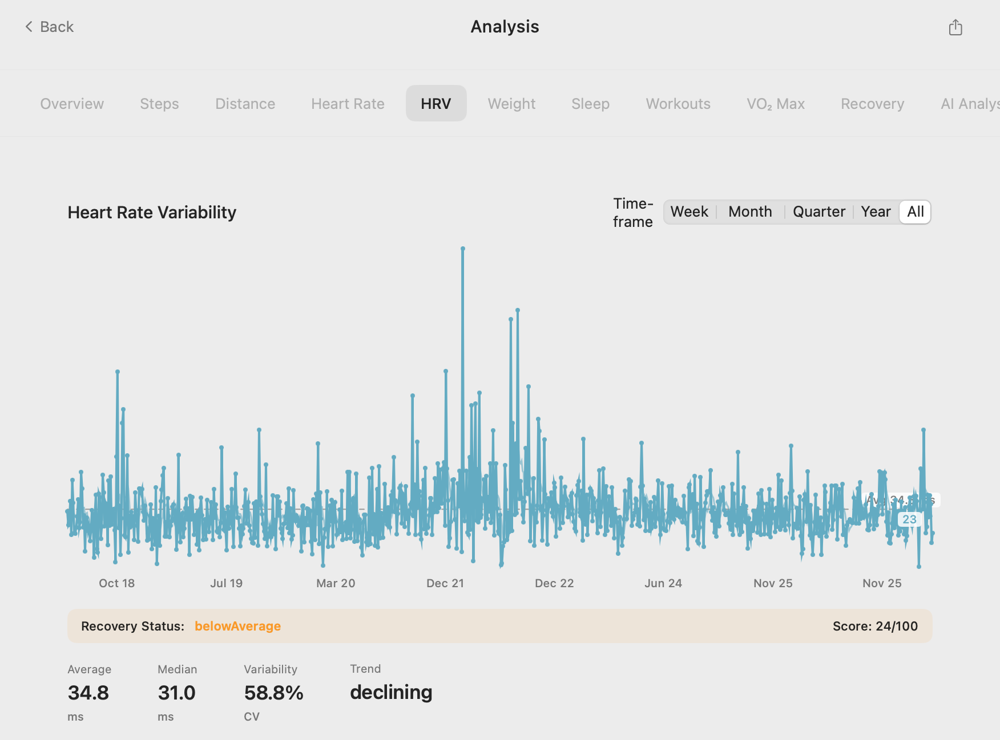

Convert Apple Health XML to CSV or JSON (Free Tool + Tutorial)
So you used Apple's built-in "Export All Health Data" feature. You have the health-records.zip file, you've unzipped it, and now you're staring at a massive, intimidating file named export.xml. What now? This file, while containing all your valuable health data, is not designed for human readability or easy analysis. This guide explains how to convert the Apple Health XML to a usable CSV or JSON file.
The export.xml Problem: Why Do You Need a Converter?
The export.xml file is a raw data dump from the HealthKit database. It's structured in a way that is incredibly detailed but also incredibly complex.
- Not Spreadsheet Friendly: You cannot simply open
export.xmlin Excel or Google Sheets and expect to see neat rows and columns. - Deeply Nested: Data is organized in a hierarchical structure that requires a custom parser to read properly.
- Verbose: The file is filled with XML tags, attributes, and metadata that make it huge and difficult to navigate.
To perform any kind of meaningful analysis, create a proper Apple Health data backup, or simply view your own trends, you must first parse and convert this file.
How to Convert Your export.xml File
There are a few ways to tackle this conversion, ranging from highly technical to user-friendly.
Method 1: Custom Programming Scripts (The Hard Way)
For developers, writing a script in a language like Python or R is a common approach. Libraries like lxml or xml.etree.ElementTree in Python can be used to parse the XML file and write the data out to a CSV.
Challenges: This requires coding knowledge, a deep understanding of the HealthKit XML schema, and is time-consuming to write and debug.
Method 2: Using Our Free "AI Analyzer" Tool for Mac
If you already have your export.xml file on your Mac, our free companion tool, "AI Analyzer," can do the heavy lifting for you. While its main purpose is to analyze health data with AI, it's also built on a powerful parser that can directly read and process the export.xml file.
- Download the "AI Analyzer" from our GitHub page.

- Launch the tool and point it to your
export.xmlfile. - The tool will parse the entire file and often gives you the option to save the processed data as a CSV or Parquet file for further use. 
This is the most powerful option if you already have the XML file and want to move straight to analysis on your Mac.
The Best Method: Avoid XML Altogether
Why wrestle with conversion when you can bypass the problem entirely? The fundamental issue is the export.xml file itself. A modern workflow avoids this file completely by generating a clean, analysis-ready file from the start.
| Feature | The XML Conversion Workflow | The Direct Export Workflow |
|---|---|---|
| Step 1 | Use Health app to export ZIP | Download "Health Data Export" app |
| Step 2 | Unzip file to find export.xml |
Tap "Export" and choose CSV/JSON |
| Step 3 | Find/write a script or tool | Save/AirDrop your clean file |
| Step 4 | Convert Apple Health XML to CSV | N/A (already done) |
| Step 5 | Finally open in Excel/Sheets | Open in Excel/Sheets |
How the "Health Data Export" App Prevents This Problem
Our iOS app is the "easy button." It communicates directly with HealthKit to create a clean Apple Health CSV export or JSON file from the beginning. You get the exact file format you need in seconds, saving you time and frustration. It's the simplest way to export your Apple Health data.
Take Back Your Time
Don't waste hours fighting with XML files. Get straight to the insights.
- Download "Health Data Export" on the App Store to avoid the XML problem forever.
- Get the "AI Analyzer" from GitHub if you're stuck with an
export.xmland need a powerful tool to convert and analyze it on your Mac.
Frequently Asked Questions (FAQ)
Is there a reliable online tool to convert my Apple Health XML?
We strongly advise against uploading your export.xml file to random online converters. This file contains sensitive personal health information. Use offline, on-device tools like our "AI Analyzer" or "Health Data Export" app to protect your privacy.
Why does Apple use XML for its export anyway?
XML is a very robust and self-describing data format. It's excellent for ensuring that every single piece of metadata is preserved during a data dump, making it suitable for archival and machine-to-machine transfer. However, it's extremely user-unfriendly for direct data analysis.
What data gets lost when I convert from XML to CSV?
To make data fit into a flat CSV file, some metadata or less common data fields might be simplified or left out compared to the raw XML. However, for 99% of users, the resulting CSV contains all the essential information needed for analysis (date, data type, value, unit).
Can Excel open the export.xml file directly?
Excel can *try* to open XML files, but it will typically fail to create a sensible table structure from a complex file like export.xml. You will see the data, but it will be a messy and unusable hierarchy of tags. You must convert it first.
Does your iOS app also produce an XML file?
Yes, for completeness and for users who have workflows built around XML, we offer it as an export option. The key difference is that we also offer direct-to-CSV and direct-to-JSON, which are far more practical for most people.